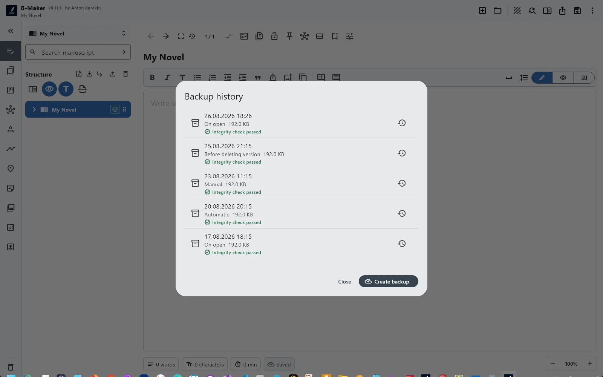

Модель
Каждый слой отвечает на свой вопрос, вместо попытки одним механизмом защитить всё.
Versions защищают осознанные переписывания
Хотим попробовать другой вариант, не уничтожая предыдущий ответ.
Trash защищает от структурного удаления
Удалили раздел или ветку и позже поняли, что это была ошибка.
Backup и history защищают состояние проекта
Нужна другая копия или более раннее состояние после более широкой проблемы.
Integrity Check защищает от ложной уверенности
Наличие файла ещё не означает, что внутренняя структура проекта согласована.

Слои позволяют восстанавливаться пропорционально проблеме
Опечатке не нужен полный restore. Неудачной редакции не нужен backup. Повреждённому проекту недостаточно text versions. Используем самый маленький механизм, подходящий классу ошибки.
Version vs Backup · Зачем Integrity Check? · Зачем assets внутри проекта?